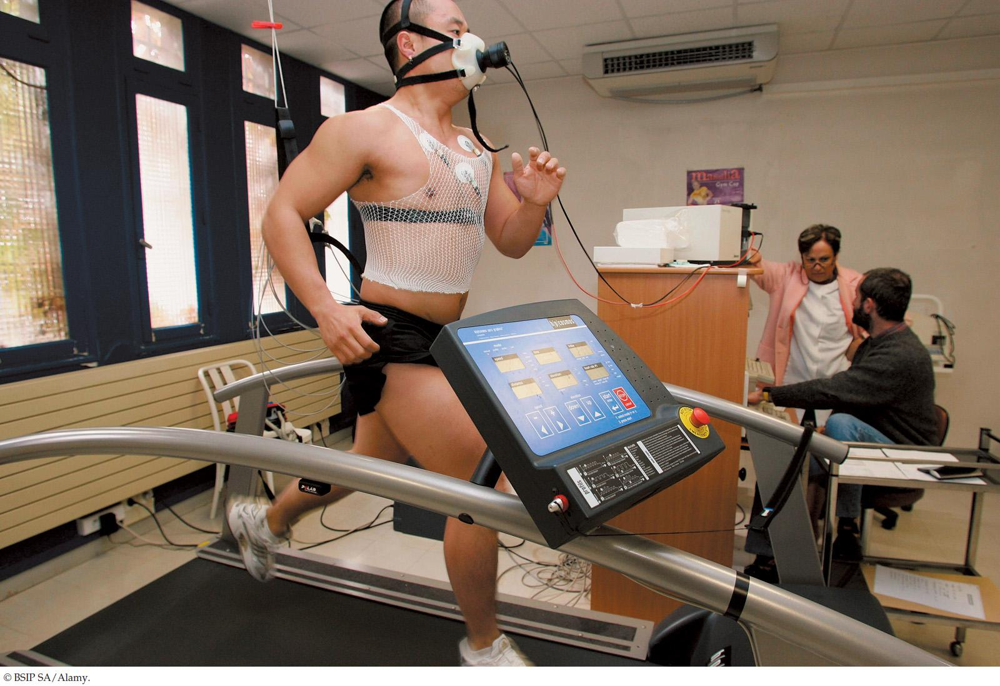

| 29 | Fundamentals of Animal Function |
|
KEY CONCEPTS
29.1 Animals Eat to Obtain Energy and Chemical Building Blocks 29.2 An Animal’s Energy Needs Depend on Physical Activity and Body Size 29.3 Metabolic Rates Are Affected by Homeostasis and by Regulation and Conformity 29.4 Animals Exhibit Division of Labor, but Each Cell Must Make Its Own ATP 29.5 The Phenotypes of Individual Animals Can Change during Their Lifetimes 29.6 Animal Function Requires Control Mechanisms |

A man exercises on a treadmill wearing a device that measures his rate of O2 consumption. His speed can be controlled by adjusting the speed of the treadmill.
|
Animals have muscles and are able to move. This man on a treadmill provides a dramatic illustration as he uses his leg muscles to propel himself forward. His ancient ancestors did much the same thing to pursue prey and escape dangers. Today investigators are studying the man’s exercise performance on a treadmill, where his speed of running can be controlled by adjusting the speed of the treadmill. As the surface of the treadmill moves backward, driven by an electric motor, the man has to run forward at the same speed if he is to avoid being carried backward and dumped on the floor.
Treadmills have been used to study many questions in animal biology. Chimpanzees, for example, can be trained to run on a treadmill on four legs or on only two legs. Then their abilities to run in both ways can be compared to learn about advantages and disadvantages of two-legged and four-legged running. Studies of this kind help us better understand why humans became two-legged early in their evolution.
The man in the photo is breathing from a device that is measuring his rate of oxygen (O2) consumption. From that information, investigators will be able to calculate the energy cost of his exercise.
One way to rate the efficiency of animal locomotion is to measure the energy cost to cover a certain distance. From measures of O2 consumption on treadmills, for example, we know that a person expends about 300 kilojoules (70 kilocalories) per kilometer when jogging at a speed of 11 kilometers per hour.
The energy costs for birds to fly and for fish to swim can be measured in similar ways. Birds have been trained to fly in wind tunnels, and fish have been coaxed to swim in water tunnels. Then their O2 consumption has been measured as they fly or swim.
Believe it or not, birds flying and fish swimming can cover distance much more cheaply—in terms of energy used—than mammals running. This may help explain why long-distance annual migrations have evolved principally in birds and fish rather than in mammals.
We humans have much higher costs to cover distance when swimming than fish do, in part because of the difference between swimming at the surface and swimming underwater. A person on a bicycle covers distance with roughly the same energy efficiency as a human-size fish swimming. So, to get a subjective sense of a fish’s energy cost of covering distance, hop on a bicycle!
Why can we use a person’s rate of O2 consumption to measure the rate at which he or she consumes energy to run?